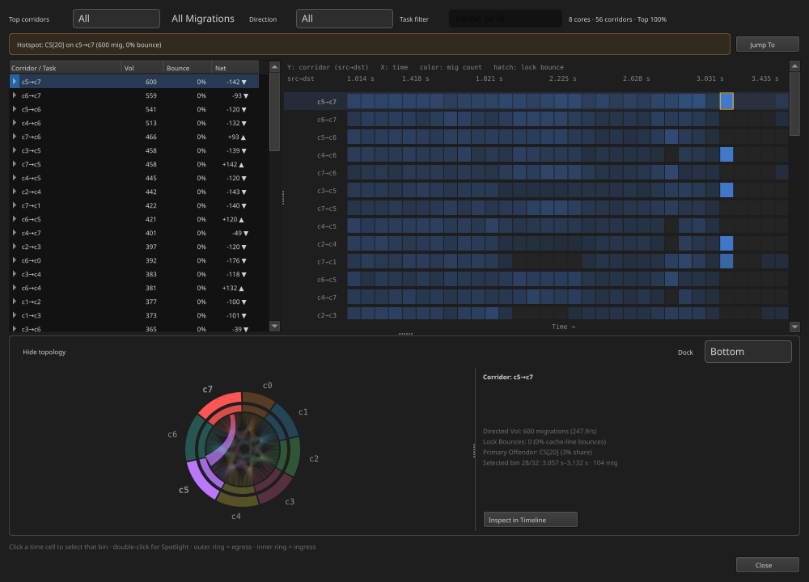

See which task ran, on which core, and for how long.
02
Where is the problem?
Find the affected task, core, event, and time range.
03
How large is the problem?
Measure execution, waiting, latency, load, and migration.
04
Did the change help?
Repeat the same measurement on a new trace.
BTFViewer turns recorded events into measurable evidence. It does not inspect source code or simulate the RTOS scheduler.
What information is inside a trace?
flowchart LR
A["BTF / STI EVENTS"] --> B["TASK EXECUTION<br/>start · stop · switch"]
A --> C["CORE ACTIVITY<br/>active · idle · tick · gap"]
A --> D["OPTIONAL STI DATA<br/>ready · mutex · queue · interval"]
B --> E["TIMELINE + METRICS"]
C --> E
D --> E
classDef input fill:#0d2b3c,stroke:#22d3ee,color:#e2e8f0,stroke-width:2px;
classDef optional fill:#3b2a0b,stroke:#fbbf24,color:#fef3c7,stroke-width:2px;
class A,B,C,E input;
class D optional;
Always available from context switches
Task execution, core placement, CPU load, blocking intervals, and migrations.
Available only when recorded
Dispatch latency, lifecycle, mutex, queue, intervals, and priority inheritance.
Use the timeline for events, the load chart for workload phases, and the right panel for measured evidence.
Each interface area answers a different question
Area
Use it to…
Toolbar
Open a trace, change views, fit the trace, and open Analysis or AI
Timeline
See task execution and select exact events
Load chart
See CPU activity and workload phases
Right panel
Read Statistics, Findings, and AI results
Your first investigation follows eight steps
flowchart LR
A["1 · OPEN"] --> B["2 · ORIENT"] --> C["3 · CHECK<br/>TRACE"] --> D["4 · REVIEW<br/>OVERVIEW"]
D --> E["5 · FIND<br/>A LEAD"] --> F["6 · SCOPE"] --> G["7 · VERIFY"] --> H["8 · RECORD"]
classDef normal fill:#0d2b3c,stroke:#22d3ee,color:#e2e8f0,stroke-width:2px;
classDef finish fill:#153528,stroke:#34d399,color:#d1fae5,stroke-width:2px;
class A,B,C,D,E,F,G normal;
class H finish;
Do not begin with a cause. Begin with the full trace, then narrow the scope.
Step 1 — Open the trace and select Fit
Do this
Select Open.
Choose a .btf, compressed trace, ZIP archive, or .xtf demo.
Select Fit or press Ctrl+0.
Confirm that the full capture is visible.
You should learn
Total trace duration
Number of tasks and CPU cores
Startup, steady-state, burst, idle, and shutdown phases
Whether the reported problem is inside the capture
New user tip: Run the bundled 8-core demo before analysing an application trace.
Step 2 — Use Task View, Core View, and Load
Task View
Follow one task across cores.
Core View
See which task occupied each core.
Enable Load: use the chart below the timeline to find busy, idle, and unbalanced phases.
Step 3 — Check trace quality first
Open Summary
Confirm the capture duration.
Confirm the expected tasks and CPU cores.
Check that the reported incident is inside the capture.
Open Trace Health (TICK)
Look for missing or irregular ticks.
Look for large gaps or a short capture.
Confirm the required STI channels were recorded.
Check a busy window if TICKLESS idle is expected.
Check the recording before investigating the application.
Decide whether the trace is usable
Usable traceThe incident is captured and the required events are present. Continue to the full-trace overview.
Missing evidenceFix instrumentation or capture settings, then record the workload again.
Remember: TICKLESS is not automatically an error. Missing evidence is a limitation, not proof of an application fault.
Step 4 — Review capacity and activity
Open this Statistics section
Information you receive
Summary / Core utilisation
Duration, tasks, cores, total load, and load balance
Top tasks by CPU
Tasks that use the most CPU time
Core Time Breakdown
Active, Idle, Tick, and Gap time for each core
Execution Time Per Slice
Typical and worst on-CPU slice duration
First question: Is the workload using CPU capacity as expected?
Step 4 — Review timing and anomalies
Open this Statistics section
Information you receive
Blocking Time
Tasks with long off-CPU intervals
Core Migrations
Tasks that move frequently between cores
Timeline Anomalies / Worst Events
Candidate events and time ranges to inspect
Goal: understand the workload before you focus on one problem.
Step 4 — Understand core migration
What is a migration?
SAME TASK
Core 5→Core 7
Consecutive execution slices of one task run on different CPU cores.
Heatmap item
Simple meaning
Corridor
Directed path from one core to another
Vol
Migration count in the visible time range
Bounce
Migrations associated with cross-core mutex holding
Time bin
When that corridor becomes active
Migration is not automatically a fault. Investigate when it is frequent, bursty, or appears with latency, load imbalance, short dwell time, or synchronization activity.
Step 4 — Read the core migration heatmap

Actual BTFViewer export · top corridors at left · activity over time at right
Step 4 — Investigate a migration hotspot
Open Core Migrations and the heatmap.
Sort corridors by migration volume.
Select a repeated source-to-destination path.
Find the busiest time bins in the heatmap.
Select Inspect in Timeline.
Place C1–C2 around one migration burst.
Check load, affinity, overhead, and synchronization activity.
The heatmap locates repeated corridors; the timeline and scoped metrics show whether they are harmful.
Statistics is organized around five questions
01
Is CPU capacity balanced?
Utilisation · active cores · switch overhead · top CPU tasks
02
Where does each task run?
Affinity · Task × Core · migration paths · load over time
03
How long does work or waiting take?
Execution · blocking · dispatch latency · period · jitter
Important: Dispatch latency and response time need suitable STI events. If the trace does not contain them, the result may be limited or heuristic.
Percentiles reveal slow events
Avg
p95
p99
Max
Conceptual distribution — not measured data
Avg
Typical overall behavior
p95
The slower part of normal operation
p99
Severe events that repeat
Max
The worst observed event
Step 5 — Choose one finding to investigate
flowchart LR
A["ANALYSIS<br/>ranked findings"] --> B["SELECT<br/>one relevant finding"]
B --> C["OPEN<br/>named Statistics section"]
C --> D["REPEAT<br/>the reported value"]
D --> E["JUMP<br/>to the event"]
classDef normal fill:#0d2b3c,stroke:#22d3ee,color:#e2e8f0,stroke-width:2px;
class A,B,C,D,E normal;
Each finding can provide:
Severity: Critical, Warning, or Info
Affected task, core, or metric
A related Statistics section
A useful time range, when available
A finding is a lead. It is not a confirmed root cause.
Step 6 — Use C1–C2 to isolate the incident
STARTUP
initialisation
STEADY STATE
normal workload
INCIDENT
observable burst
RECOVERY
return to baseline
C1
C2
C1–C2 turns a long trace into one incident that can be measured and verified.
Set the incident range in five actions
Jump to the outlier or finding.
Place C1 before the possible cause and C2 after the visible effect.
Select Zoom to cursor range (Ctrl+R).
Enable Limit to C1–Cn in Statistics.
Reopen Analysis for the same scope.
Expected result: Statistics, Findings, and AI now describe the same incident window.
Step 7 — Verify the event on the timeline
flowchart LR
A["CLAIM"] --> B["METRIC<br/>repeats in scope"] --> C["TIME<br/>exact event found"] --> D["TIMELINE<br/>nearby activity matches"] --> E["RESULT"]
classDef normal fill:#0d2b3c,stroke:#22d3ee,color:#e2e8f0,stroke-width:2px;
classDef result fill:#3b2a0b,stroke:#fbbf24,color:#fef3c7,stroke-width:2px;
class A,B,C,D normal;
class E result;
A cause is supported only when the scoped metric, timestamp, and nearby timeline activity agree.
Ask four questions before accepting a cause
Does the value repeat inside C1–C2?
Do the task, core, time, and duration match?
What happened immediately before and after the event?
Is there another simple explanation?
If one answer is unclear: keep the result as “not yet proven” and collect better evidence.
AI explains measured evidence. It does not replace Statistics or timeline verification.
Choose an AI action for investigation
Your question
Use this action
AI receives
What should I inspect first?
Triage findings
Ranked Findings and summary metrics
Why may this finding happen?
Investigate
Finding, task, scope, and requested evidence
Does the evidence support it?
Verify with AI…
Evidence that agrees and disagrees
What happened between C1 and C2?
Explain this region with AI
Cursor-scoped Statistics and events
Choose an AI action for events and changes
Your question
Use this action
AI receives
What happened in this segment?
Ask AI about this event
Selected task, core, time, and nearby events
Which change is worth testing?
What-if / Optimize
Measured slices and heuristic assumptions
Did the new build improve?
Compare → Query with AI…
Before/after comparison tables
What can the AI Assistant produce?
01
Explanation
Plain-language meaning of a finding, metric, event, or region.
02
Investigation plan
Possible causes, required checks, and the next evidence to collect.
03
Evidence links
Named metrics plus clickable jump:TIME or time ranges.
04
Verification result
Supported, not yet proven, or not supported—with reasons.
05
Experiment ideas
Estimated changes to test on firmware or configuration.
06
Report
Evidence, conclusion, confidence, alternatives, and next action.
AI follows the same six-step workflow
01
Triage
What looks wrong?
02
Scope
Where does it happen?
03
Investigate
What may cause it?
04
Verify
Does evidence agree?
05
Experiment
What should we test?
06
Compare
Did it improve?
Do not skip from Triage to Experiment. A change is useful only after the possible cause matches the evidence.
Check every AI answer before accepting it
Accept the answer only when
Named metrics exist in Statistics
Every cited time is inside the selected scope
Task, core, duration, and events match
Other possible causes were considered
Confidence matches the available evidence
Reject or repeat the question when
A jump:TIME is outside C1–C2
The AI assumes an event that was not captured
An estimate is presented as a measurement
The conclusion appears before evidence is collected
The scope is empty or incorrect
Know what AI cannot do
It cannot read firmware source or ELF files.BTFViewer provides trace evidence, not code analysis.
It cannot recover events that were not recorded.Missing trace data must remain a stated limitation.
It cannot simulate the RTOS scheduler.What-if and Optimize are heuristic estimates.
It cannot confirm a cause by wording alone.The metric and timeline must support the conclusion.
Privacy: local models keep requests local. Cloud models receive the selected evidence according to your endpoint and settings. Review anonymization and sensitive-trace options.
After a change, repeat the same measurement
BASELINE
Trace A
Record workload, scope, metric, evidence time, and limitations.
→
ONE CHANGE
Test
Change affinity, priority, mutex scope, period, or workload distribution.
→
RESULT
Trace B
Use the same workload phase, cursor scope, and Statistics metrics.
Check the target metric and side effects. The result may be better, unchanged, worse, or still unclear.
Beginner checklist — find the incident
If you are unsure where to start: Analysis → select one relevant finding → open its Statistics section → jump to the event.
Beginner checklist — verify and close
Close only when the evidence can be repeated. Record the scope, metric, timestamp, conclusion, and remaining limitations.
Start with evidence. Finish with a repeatable result.